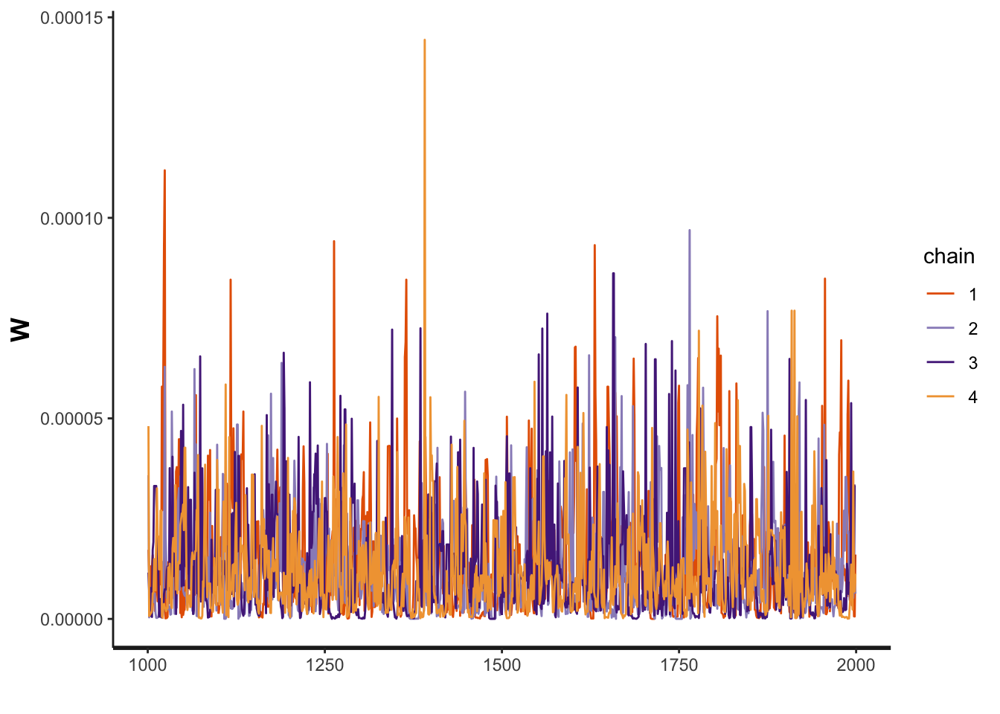

Simple_stan_inference
Jennifer Blanc
11/8/2019
Last updated: 2019-11-13
Checks: 7 0
Knit directory: infer_mutational_bias/
This reproducible R Markdown analysis was created with workflowr (version 1.4.0). The Checks tab describes the reproducibility checks that were applied when the results were created. The Past versions tab lists the development history.
Great! Since the R Markdown file has been committed to the Git repository, you know the exact version of the code that produced these results.
Great job! The global environment was empty. Objects defined in the global environment can affect the analysis in your R Markdown file in unknown ways. For reproduciblity it’s best to always run the code in an empty environment.
The command set.seed(20191108) was run prior to running the code in the R Markdown file. Setting a seed ensures that any results that rely on randomness, e.g. subsampling or permutations, are reproducible.
Great job! Recording the operating system, R version, and package versions is critical for reproducibility.
Nice! There were no cached chunks for this analysis, so you can be confident that you successfully produced the results during this run.
Great job! Using relative paths to the files within your workflowr project makes it easier to run your code on other machines.
Great! You are using Git for version control. Tracking code development and connecting the code version to the results is critical for reproducibility. The version displayed above was the version of the Git repository at the time these results were generated.
Note that you need to be careful to ensure that all relevant files for the analysis have been committed to Git prior to generating the results (you can use wflow_publish or wflow_git_commit). workflowr only checks the R Markdown file, but you know if there are other scripts or data files that it depends on. Below is the status of the Git repository when the results were generated:
Ignored files:
Ignored: .DS_Store
Ignored: .Rhistory
Ignored: .Rproj.user/
Ignored: data/47UKBB/
Unstaged changes:
Modified: code/parse_alphas_47UKBB.R
Note that any generated files, e.g. HTML, png, CSS, etc., are not included in this status report because it is ok for generated content to have uncommitted changes.
These are the previous versions of the R Markdown and HTML files. If you’ve configured a remote Git repository (see ?wflow_git_remote), click on the hyperlinks in the table below to view them.
| File | Version | Author | Date | Message |
|---|---|---|---|---|
| Rmd | 7617ca3 | jgblanc | 2019-11-13 | Publish the simple stan inference |
| html | d8e8b14 | jgblanc | 2019-11-13 | Build site. |
| Rmd | 01c8d3a | jgblanc | 2019-11-13 | Publish the simple stan inference |
| html | 6edc2e7 | jgblanc | 2019-11-13 | Build site. |
| Rmd | a89bee4 | jgblanc | 2019-11-13 | Publish the simple stan inference |
| html | 548c5f3 | jgblanc | 2019-11-12 | Build site. |
| Rmd | 2c7bc48 | jgblanc | 2019-11-12 | Publish simple stan inference |
| Rmd | cb899ed | jgblanc | 2019-11-11 | added simple STAN inference |
Introduction
For this project, we are interested in infering the degree of mutational bias across traits. In order to calculate the mutational bias, we need to infer specific parameters from the data. First consider the polygenic mutation-selection balance model. In this model, the selection coefficient for each individual allele is determined by the approximation below:
\[s \approx \beta \phi(T) S\]
Here \(\beta\) is the true effect size of the allele, \(\phi(T)\) is the height of the liability threshold, and S is the fitness cost of the disease. We can think of \(\beta * \phi(T)\) as an approximation of the portion of the population pushed over the liability threshold when the protective allele is swapped to the risk allele. \(\phi(T) S\) is a compound parameter that is related to the prevelance of the disease. The larger the \(\phi(T)\) the higher the prevalance of disease (the threshold is closer to the center), the smaller the fitness cost must be. Here we will call this compound parameter \(W\):
\[W = \phi(T)S\]
In this analysis we are interested in infering from simulated data. We will simulate data under a specfic value of W and then use bayesian inference (using STAN) to infer back the value of W, the data were generated under.
Infer W using RAF
To start with we are going to make a (very) simplifying assumption that we know all the causal loci and that they all have an effect size of one (\(\beta\) = 1). The distribution of risk alleles in the population for a given effect size \((\beta)\), population size (N), mutation rate \((\mu)\), and W is given below:
\[\psi(x|\beta, N,W, \mu) = C * e^{-4 N\beta W x} (x(1-x))^{4N\mu -1}\]
The first thing we need to do is simulate data (set of risk allele frequencies) from the above distribution under a specfic value of W.
Here are helper functions that will allow us to draw allele frequencies from \(psi\). We first need a function for the distribution without the constant of integration. For the set of parameters, we will calculate C by integrating this function and then using that C as an argument for the target \(\psi\) function we want to draw samples from.
# Function to integrate
psi_no_c <- function(x, N, B, W, mu) {
p1 <- exp(-4 * N * B * W * x)
p2 <- (x *(1-x))^((4*N*mu)-1)
return(p1 * p2)
}
# This is the target distribution from which we want to sample
psi_target <- function(x, N, B, W, mu, C) {
p1 <- exp(-4 * N * B * W * x)
p2 <- (x *(1-x))^((4*N*mu)-1)
return(p1 * p2 * C)
}This function will simulate a set of Risk Allele frequencies acording to \(\psi\) using inverse transform sampling and discritizing the distribution.
simulate_data <- function(N, B, W, m) {
# This function will sample a set of risk allele frequencies
# Calculate normalizing constant
C <- 1/ integrate(psi_no_c, (0.5/(2*N)),1 - (0.5/(2*N)) , N=N, B=B, W=W, mu=mu)$value
# Discretize the target CDF
i_values <- seq(0,1-(1/(2*N)), 1/(2*N))
pis <- rep(0, length(i_values))
# Integrate up to i + (0.5/2N) for all i
for (j in 1:length(i_values)) {
pis[j] <- integrate(psi_target, (0.5/(2*N)), (i_values[j]+ (0.5/(2*N))), N=N, B=B, W=W, mu=mu, C=C)$value
}
# Draw from uniform
U <- runif(m)
# Find smallest i such that pi < U is true
UT <- rep(0, length(U))
for (j in 1:length(U)) {
UT[j] <- which(U[j] <= pis)[1] - 1
}
# Calculate set of RAF
x_freqs <- UT / (2*N)
return(x_freqs)
}Now we are ready to simulate data. We will set the constant parameters we are not interested in inferring and then set W and simulate the data
# Constant parameters
N <- 100000
mu <- 10^-9
B <- 1
m <- 500 # Number of causal snps
# Value of W for simuation
W <- 1e-5
# Simulate data
x_freqs <- simulate_data(N, B, W, m)
# Look at distribution of data
hist(x_freqs)
Now we have data are are ready to do inference. Let’s look again at the distrubtion of risk alleles as stated above:
\[\psi(x|\beta, N,W, \mu) = C * e^{-4 N\beta W x} (x(1-x))^{4N\mu -1}\]
Using Bayes rule we can re-write this as:
\[P(W|\beta, N, \mu, x) = \frac{P(x| \beta, N, \mu, W) P(W)}{P(x|\beta, N, \mu)} \propto P(x| \beta, N, \mu, W) P(W)\]
Now we have a posterior distribution on W that we can sample from using the likelihood (\(\psi(x|\beta, N,W, \mu)\)) and the prior, which we for now assume to be 1. Below is the STAN program I wrote to sample from this posterior
Confusion: I’m not sure how to deal with the constant of integration in \(psi\). To me it seems like in order to evaluate the likelihood we need to recalculate C for each possible step in the MCMC but I’m not sure how to do this in stan.
functions {
real my_raf_lpdf(real[] x, real W, int N, real mu, real B){ // PSI density
vector[num_elements(x)] prob;
real lprob;
for (i in 1:num_elements(x)) {
prob[i] = ((x[i] * (1- x[i]))^((4*N*mu) - 1)) * exp(-4 * N * B * W * x[i]) ;
}
lprob = sum(log(prob));
return lprob;
}
}
data {
int<lower=0> m; // Number snps
real y[m]; // RAF
real<lower=0> mu; // mutation rate
real B; // effect size
int N; // population size
}
parameters {
real<lower=1e-20, upper=1e-3> W; // selection
}
model {
y ~ my_raf_lpdf(W, N, mu, B); // posterior
}
Finally we will fit the stan model and get the posterior distribution on W
data <- list(y = x_freqs, m = m, B = B, N = N, W=W, mu=mu)
fit <- sampling(simple_RAF, data = data)Let’s look at the results.
print(fit)Inference for Stan model: 90224baf57b8619ceed2c1aef12c6f1a.
4 chains, each with iter=2000; warmup=1000; thin=1;
post-warmup draws per chain=1000, total post-warmup draws=4000.
mean se_mean sd 2.5% 25% 50% 75% 97.5% n_eff
W 0.00 0.00 0.00 0.00 0.00 0.00 0.00 0.0 1484
lp__ 3613.24 0.03 0.79 3610.92 3613.06 3613.53 3613.74 3613.8 866
Rhat
W 1
lp__ 1
Samples were drawn using NUTS(diag_e) at Wed Nov 13 11:09:18 2019.
For each parameter, n_eff is a crude measure of effective sample size,
and Rhat is the potential scale reduction factor on split chains (at
convergence, Rhat=1).plot(fit)ci_level: 0.8 (80% intervals)outer_level: 0.95 (95% intervals)
traceplot(fit,pars="W" )
Right now on default settings, I am not doing a great job of infering W (whole order of magnitude off).
Infer W using evolutionary status
So far we have only considered inferring W using the distribution of risk allele frequencies. Now we will introduce evolutionary information. The probability that the risk allele is derived is:
\[P(D|x, N, W, \beta) = \frac{e^{4N\beta W} - e^{4N\beta x}}{-1 + e^{4 N \beta W}}\]
Here D is an indicator variable that equals 0 if the risk allele is ancestral and 1 if the risk allele is derived. Now we want to simulate data that consisits of a set of pairs of risk allele frequecies and D (if the risk allele is derived). We will use the same inverse transform sampling function from above to draw risk allele frequencies according to \(psi\) and then use the functions below to assign evolutionary status (risk derived or ancestral) to each allele by drawing a bernoulle RV with probability calculate from the above equation.
# Probability that an allele is derived
derived_risk <- function(x, W, N, B) {
one <- exp(4 * N * B * W) - exp(4 * N * B * W * x)
two <- -1 + exp(4 * N * B * W)
return(one/two)
}
# 0 = Ancestral
# 1 = Derived
assign_status <- function(m,W,N,B,x_freqs) {
status <- rep(NA, m)
for (i in 1:m) {
freq <- x_freqs[i]
p <- derived_risk(freq, W=W, N=N, B=B)
ind <- rbinom(1,1, p)
status[i] <- ind
}
return(status)
}Now we will assign evolutionary status to our previously simulated set of RAFs:
status <- assign_status(m, W, N, B, x_freqs)
# Look at distribution of status data
table(status)status
0 1
11 489 We now have our data and wish to do inference on the W used to generate the data. We can write the posterior distribution on W as:
\[P(W|x, N, \beta, D) \propto P(D|W, x, N, \beta) P(W) \]
The likelihood is the same as written above and the prior \(P(W)\) we will consider uniform and equal to 1. Now that we have the posterior distribution we can sample from it using STAN.
Here is the STAN program I wrote to sample from the posterior:
functions {
real my_derived_risk_lpdf(real f, real W, int N, real mu, real B){
real prob;
prob = (exp(4 * N * B * W) - exp(4 * N * B * W * f)) / (-1 + exp(4 * N * B * W)) ;
return prob;
}
real my_ll_risk_lpmf(int[] s, real[] x, real W, int N, real mu, real B){
vector[num_elements(x)] prob;
real lprob;
for (i in 1:num_elements(x)) {
if (x[i] == 0) {
prob[i] = 1 - my_derived_risk_lpdf(x[i] | W, N, mu, B);
}
else {
prob[i] = my_derived_risk_lpdf(x[i] | W, N, mu, B);
}
}
lprob = sum(log(prob));
return lprob;
}
}
data {
int<lower=0> m; // Number snps
real x[m]; // RAF
int s[m];
real<lower=0> mu; // mutation rate
real B; // effect size
int N; // population size
}
parameters {
real<lower=1e-20, upper=1e-3> W; // selection
}
model {
s ~ my_ll_risk_lpmf(x, W, N, mu, B);
}
Let’s fit the STAN model to our data
data <- list(s = status, x = x_freqs, m = m, B = B, N = N, W=W, mu=mu)
fit <- sampling(simple_status, data = data)Let’s look at the results
print(fit)Inference for Stan model: 0a72b61c4421c091dad73d7010c6cd06.
4 chains, each with iter=2000; warmup=1000; thin=1;
post-warmup draws per chain=1000, total post-warmup draws=4000.
mean se_mean sd 2.5% 25% 50% 75% 97.5% n_eff Rhat
W 0.00 0.00 0.00 0.0 0.00 0.0 0.00 0.00 690 1.01
lp__ -26.14 0.02 0.61 -27.9 -26.27 -25.9 -25.76 -25.72 744 1.01
Samples were drawn using NUTS(diag_e) at Wed Nov 13 11:09:55 2019.
For each parameter, n_eff is a crude measure of effective sample size,
and Rhat is the potential scale reduction factor on split chains (at
convergence, Rhat=1).plot(fit)ci_level: 0.8 (80% intervals)outer_level: 0.95 (95% intervals)
| Version | Author | Date |
|---|---|---|
| d8e8b14 | jgblanc | 2019-11-13 |
traceplot(fit,pars="W" )
| Version | Author | Date |
|---|---|---|
| d8e8b14 | jgblanc | 2019-11-13 |
Again I am not doing a very good job. Using the evolutionary information consistently over estimates W.
Infer W using both RAF and Evolutionary Status
So far we have been using only the RAF distribution or evolutionary status to compute the log-likelihood used in the inference. By factoring the likelihood, we are able to use both peices of information to calculate the posterior:
\[P(W|x, D, N, \mu, \beta) \propto P(D|x, N, \beta, W) P(x|N, \beta, \mu) P(D) P(x)\]
Here is the STAN program I wrote to sample from this posterior distribution.
functions {
real my_raf_lpdf(real f, real W, int N, real mu, real B){ // PSI density
real prob;
prob = ((f * (1- f))^((4*N*mu) - 1)) * exp(-4 * N * B * W * f) ;
return prob;
}
real my_derived_risk_lpdf(real f, real W, int N, real mu, real B){ // Probability density of derived risk
real prob;
prob = (exp(4 * N * B * W) - exp(4 * N * B * W * f)) / (-1 + exp(4 * N * B * W)) ;
return prob;
}
real my_ll_risk_lpmf(int[] s, real[] x, real W, int N, real mu, real B){ // General log-likelihood
vector[num_elements(x)] prob;
real lprob;
for (i in 1:num_elements(x)) {
if (x[i] == 0) {
prob[i] = (1 - my_derived_risk_lpdf(x[i] | W, N, mu, B)) * my_raf_lpdf(x[i] | W, N, mu, B);
}
else {
prob[i] = my_derived_risk_lpdf(x[i] | W, N, mu, B) * my_raf_lpdf(x[i] | W, N, mu, B);
}
}
lprob = sum(log(prob));
return lprob;
}
}
data {
int<lower=0> m; // Number snps
real x[m]; // RAF
int s[m]; // A/D status (coded as 0 or 1)
real<lower=0> mu; // mutation rate
real B; // effect size
int N; // population size
}
parameters {
real<lower=1e-20, upper=1e-3> W; // selection
}
model {
s ~ my_ll_risk_lpmf(x, W, N, mu, B);
}
We can use the same data simulated above and fit our STAN model:
data <- list(s = status, x = x_freqs, m = m, B = B, N = N, W=W, mu=mu)
fit <- sampling(RAF_status, data = data)Let’s look at our results
print(fit)Inference for Stan model: 6b7b06424d57581b71b6cc314b68d8ca.
4 chains, each with iter=2000; warmup=1000; thin=1;
post-warmup draws per chain=1000, total post-warmup draws=4000.
mean se_mean sd 2.5% 25% 50% 75% 97.5% n_eff
W 0.00 0.00 0.00 0.00 0.00 0.00 0.00 0.00 1552
lp__ 3523.72 0.02 0.77 3521.58 3523.54 3524.03 3524.22 3524.28 1034
Rhat
W 1
lp__ 1
Samples were drawn using NUTS(diag_e) at Wed Nov 13 11:10:30 2019.
For each parameter, n_eff is a crude measure of effective sample size,
and Rhat is the potential scale reduction factor on split chains (at
convergence, Rhat=1).plot(fit)ci_level: 0.8 (80% intervals)outer_level: 0.95 (95% intervals)
| Version | Author | Date |
|---|---|---|
| d8e8b14 | jgblanc | 2019-11-13 |
traceplot(fit,pars="W" )
| Version | Author | Date |
|---|---|---|
| d8e8b14 | jgblanc | 2019-11-13 |
sessionInfo()R version 3.5.1 (2018-07-02)
Platform: x86_64-apple-darwin15.6.0 (64-bit)
Running under: macOS High Sierra 10.13.6
Matrix products: default
BLAS: /Library/Frameworks/R.framework/Versions/3.5/Resources/lib/libRblas.0.dylib
LAPACK: /Library/Frameworks/R.framework/Versions/3.5/Resources/lib/libRlapack.dylib
locale:
[1] en_US.UTF-8/en_US.UTF-8/en_US.UTF-8/C/en_US.UTF-8/en_US.UTF-8
attached base packages:
[1] stats graphics grDevices utils datasets methods base
other attached packages:
[1] rstan_2.19.2 ggplot2_3.1.1 StanHeaders_2.19.0
loaded via a namespace (and not attached):
[1] Rcpp_1.0.1 compiler_3.5.1 pillar_1.4.1
[4] git2r_0.25.2 plyr_1.8.4 workflowr_1.4.0
[7] prettyunits_1.0.2 tools_3.5.1 pkgbuild_1.0.3
[10] digest_0.6.19 evaluate_0.14 tibble_2.1.1
[13] gtable_0.3.0 pkgconfig_2.0.2 rlang_0.3.4
[16] cli_1.1.0 parallel_3.5.1 yaml_2.2.0
[19] xfun_0.7 loo_2.1.0 gridExtra_2.3
[22] withr_2.1.2 stringr_1.4.0 dplyr_0.8.1
[25] knitr_1.23 fs_1.3.1 stats4_3.5.1
[28] rprojroot_1.3-2 grid_3.5.1 tidyselect_0.2.5
[31] glue_1.3.1 inline_0.3.15 R6_2.4.0
[34] processx_3.3.1 rmarkdown_1.13 callr_3.2.0
[37] purrr_0.3.2 magrittr_1.5 whisker_0.3-2
[40] codetools_0.2-16 matrixStats_0.54.0 ps_1.3.0
[43] backports_1.1.4 scales_1.0.0 htmltools_0.3.6
[46] assertthat_0.2.1 colorspace_1.4-1 labeling_0.3
[49] stringi_1.4.3 lazyeval_0.2.2 munsell_0.5.0
[52] crayon_1.3.4